20th All-Ukrainian Conference of Young Scientists of IMBG
May 2026 | Kyiv, Ukraine
I presented at the 20th All-Ukrainian Conference of Young Scientists of the Institute of Molecular Biology and Genetics, NAS of Ukraine, on the topic “Structure-oriented design of small molecules as potential inhibitors of the long non-coding RNA ANRASSF1.”
Today, determining the structure of long non-coding RNAs is a real challenge; computational methods rarely yield high-quality results. The use of various software tools and molecular dynamics simulations allows for the generation of an acceptable model with high-quality geometry. Docking evaluation functions for RNA are often still in beta testing within specialized software, but nevertheless already allow for the accurate assessment of RNA electrostatics and the refinement of RNA-ligand binding free energy using MMGBSA or FEP methods.
#FEP #RNA #ligand #CADD #drugdesign #prostate #cancer
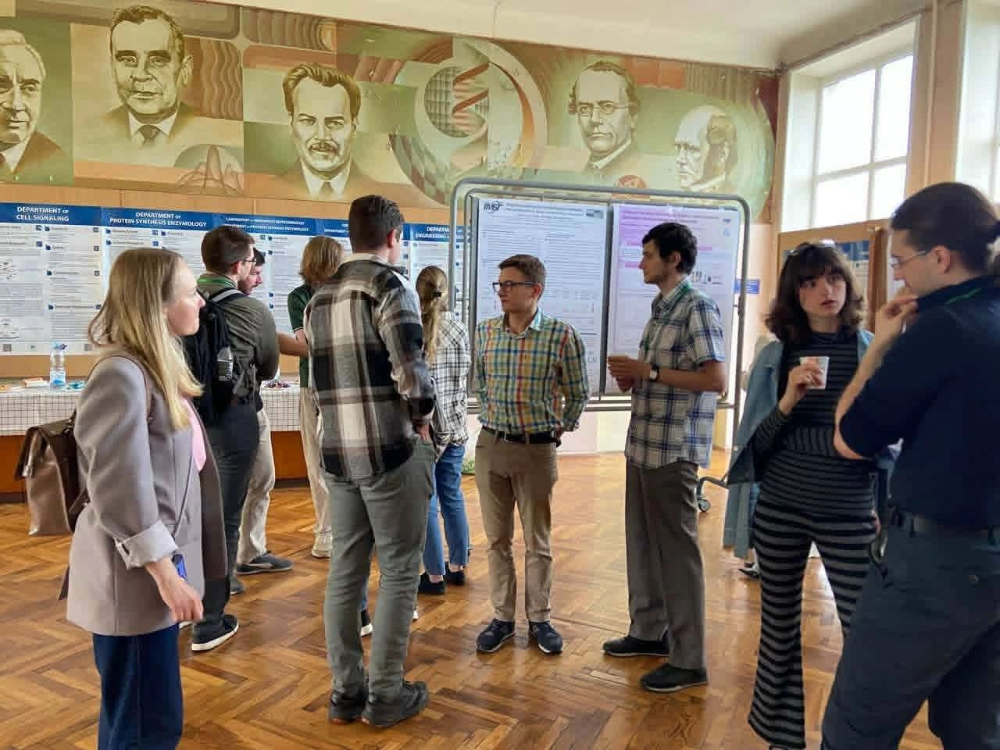
KSE Startup Ecosystem Vol. 3 Demo Day
May 2026 | Kyiv School of Economics
Pitched our drug discovery platform Yefarm (originally presented under the name FAZENA) during the KSE Startup Ecosystem Vol. 3 demo day. It was a wonderful opportunity to present our AI and CADD-driven methodology to top-tier investors and startup mentors.
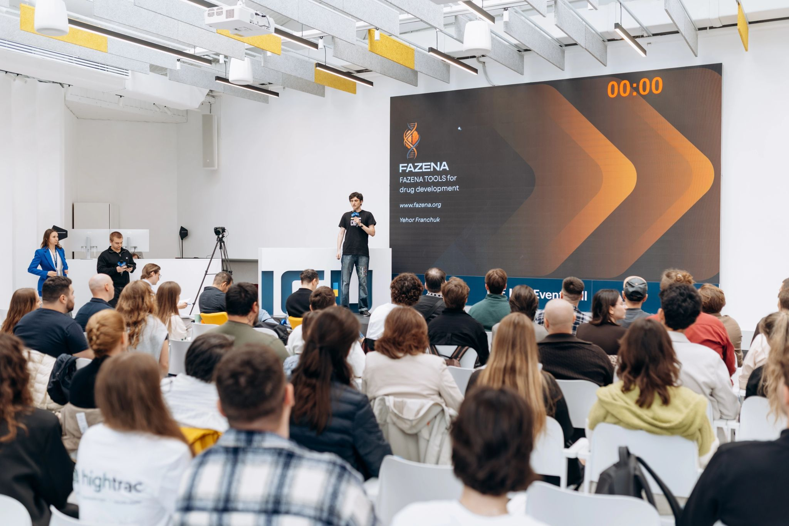
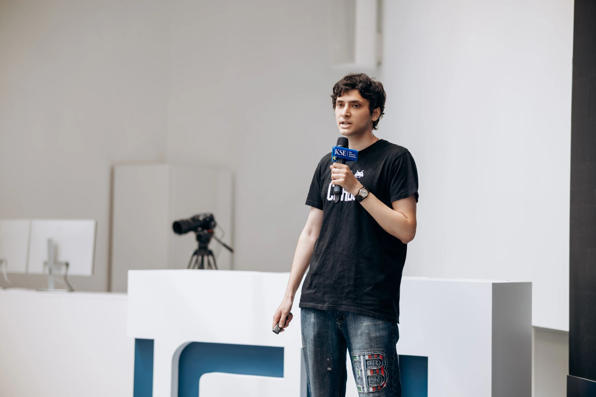
Kyiv IT Cluster: CADD Integration in HealthTech
May 2026 | Kyiv, Ukraine
The FAZENA team recently visited the Kyiv IT Cluster. We engaged in productive discussions regarding the integration of advanced technology in healthcare and shared our progress in Computer-Aided Drug Design (CADD). As we continue to develop scalable solutions for accelerated drug discovery, collaborations within the tech ecosystem remains a core driver of our growth.
Thank you to the Kyiv School of Economics for this opportunity.
#FAZENA #KyivITCluster #DrugDesign #Biotech #CADD #Bioinformatics #DeepTech #HealthTech #Innovation
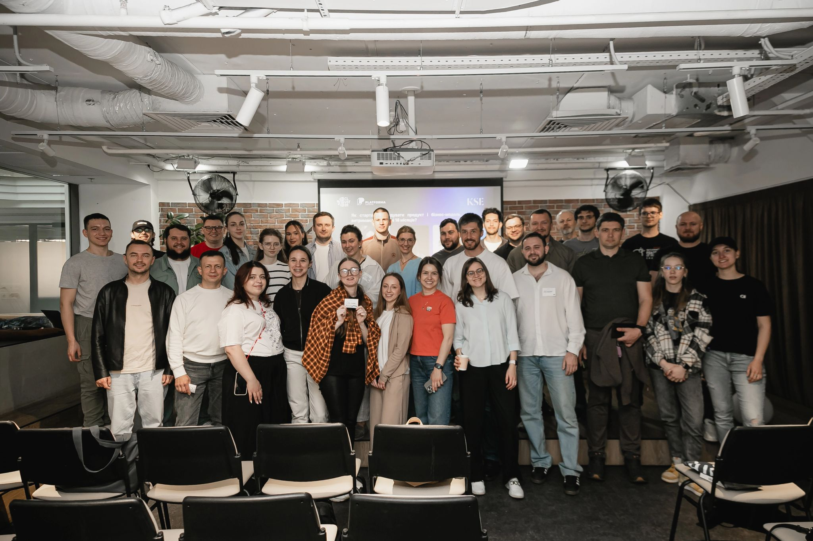
Completion of Igor Sikorsky KPI Startup School (Season 13)
April 2026 | Kyiv, Ukraine
Our team successfully completed the 13th season of the КПІ ім. Ігоря Сікорського Startup School. We plan to participate in the “Sikorsky Challenge UK” (September 2026) and the “Sikorsky Challenge” (October 2026).
We have presented RNA Hunter, a platform for designing drugs that target regulatory RNAs. Naturally, the product currently offers only basic functionality, and modern technology is constantly evolving. We will continue to grow alongside our product.
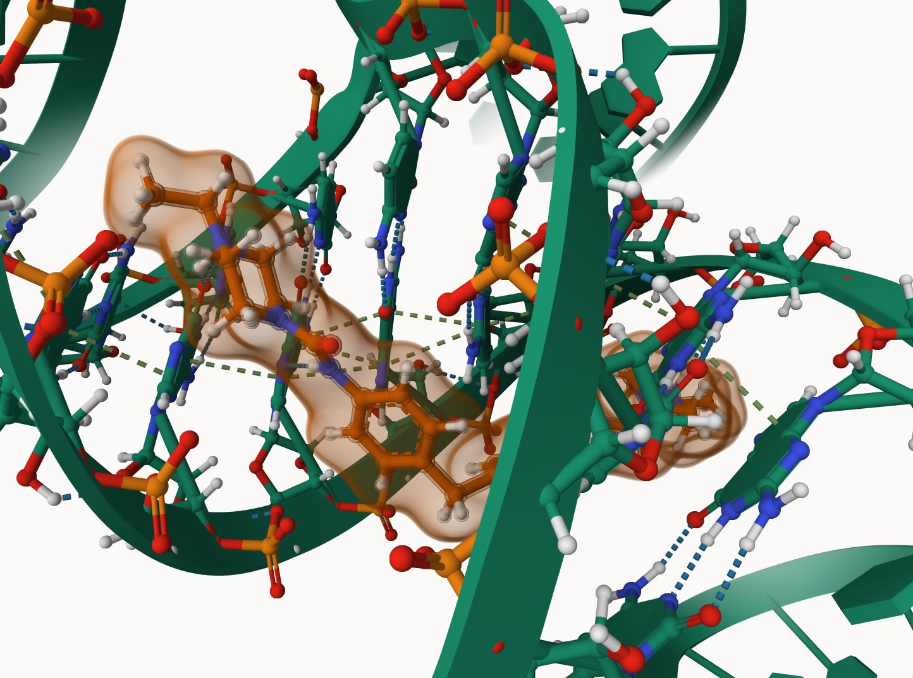
9th Advanced in Silico Drug Design Workshop 2026
February 2026 | Prague, Czech Republic
I had the incredible opportunity to participate in the 9th Advanced in Silico Drug Design Workshop 2026 in Prague. The workshop offered intensive training and collaborative work in advanced Computer-Aided Drug Design (CADD) methodologies, covering AI-driven molecular dynamics, molecular docking, and structural bioinformatics algorithms.

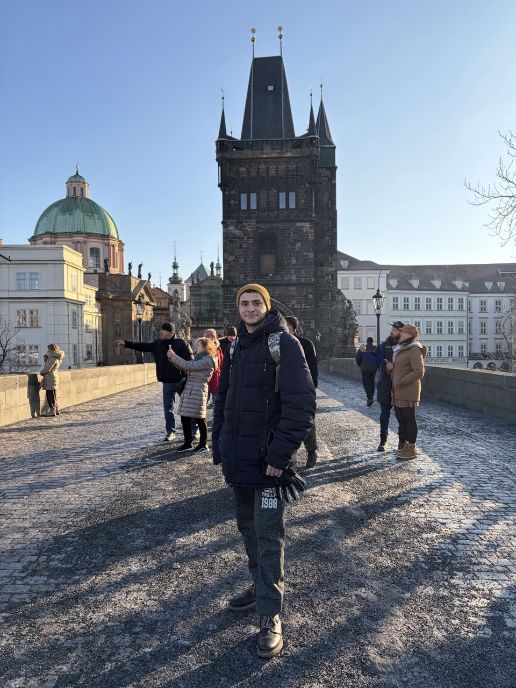
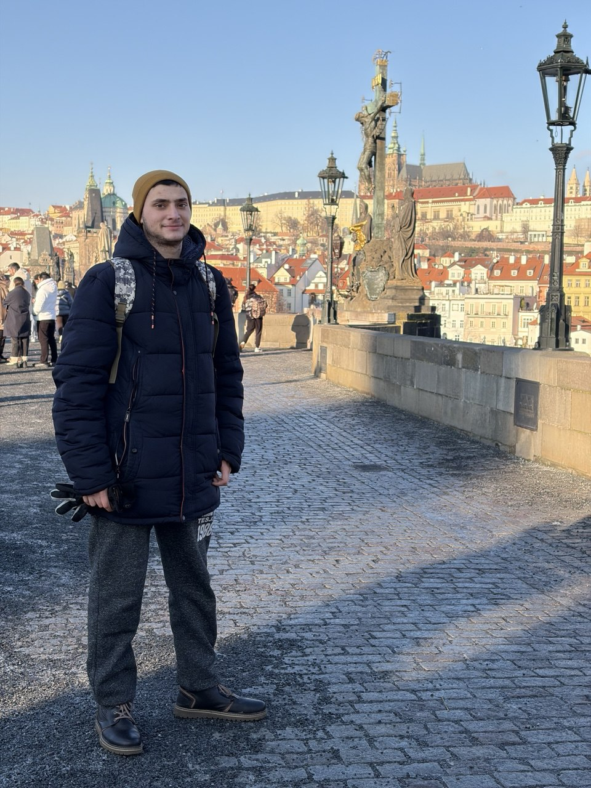

27th Bologna Winter School on Bioinformatics and Rare Diseases
February 2026 | Università di Bologna, Italy
Successfully completed the 27th Bologna Winter School organized by the University of Bologna, focusing on "Bioinformatics and Rare Diseases." The curriculum covered genome analytics, variant prioritization, and machine learning models applied to identifying the structural basis of rare pathologies.
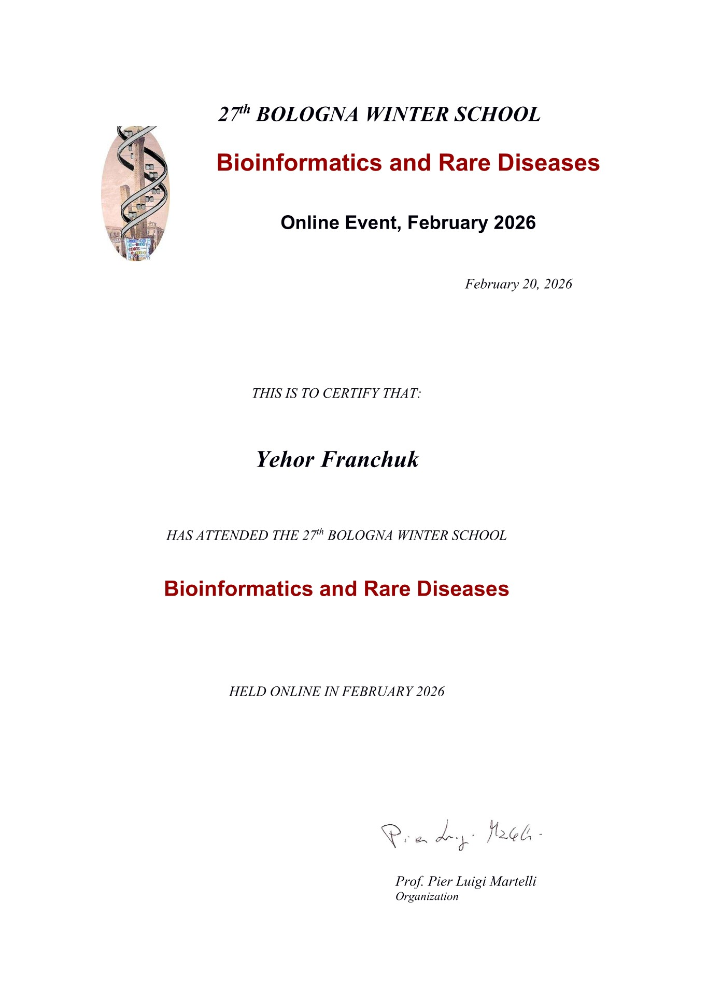
Official Certificate of Completion
KSE & Genesis MVP Camp Winter School
December 2025 | Kyiv, Ukraine
The FAZENA team took part in the KSE & Genesis MVP Camp Winter School. Throughout the program, we attended a series of insightful lectures and explored practical AI tools, modern business models, marketing strategies, as well as Lean and other management approaches in software engineering.
During the camp, we presented a product prototype designed to significantly accelerate drug discovery targeted to regulatory RNA molecules, without length limitations. The product interface was developed using a vibe coding approach. We are truly excited about the experience gained and the opportunity to continue learning, building impactful platforms and products for the big pharma market.
#FAZENA #KSE #GenesisMVP #WinterSchool #AI #DrugDiscovery #RNA #Biotech #Bioinformatics #BigPharma #Startup #Lean #SoftwareEngineering #HealthTech
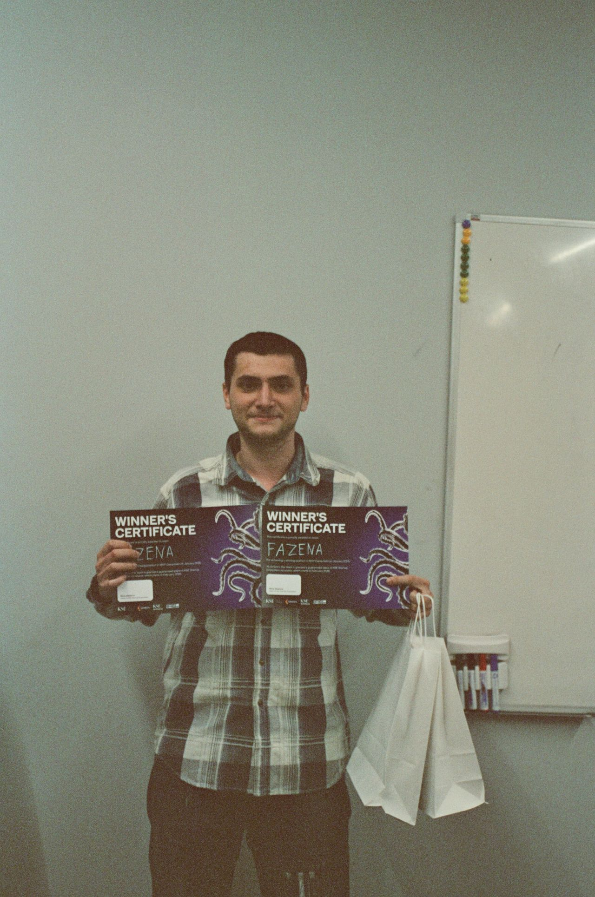
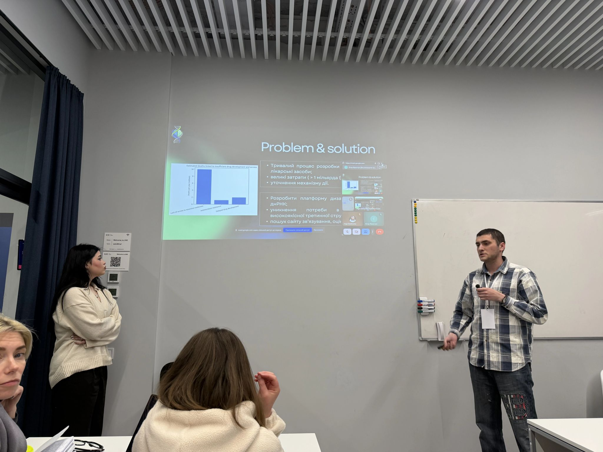
Google DevFest 2025
December 2025 | GDG Kyiv, Ukraine
The incredible **Google DevFest 2025** was a unique experience for me. I am grateful to all the organizers. Networking was especially valuable, as I learned what developers, analysts, web designers, ML, and AI specialists are currently working on.
I shared my experience in bioinformatics, which few people have heard of. It's nice that programmers are interested in healthcare, sequencing, medical imaging, and are ready to create IT startups and projects in this area.
#ai #ml #development #it #google #gdg_kyiv #gdg #artificialintelligence #machinelearning #ngs #bioinformatics #startups #project #medical #imaging
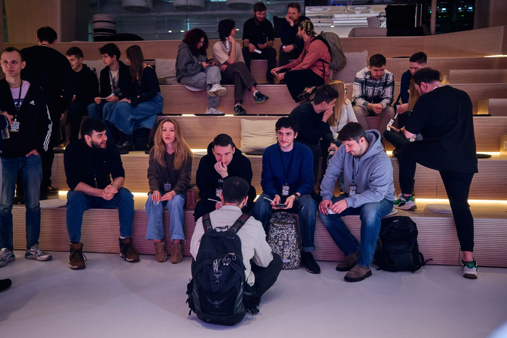
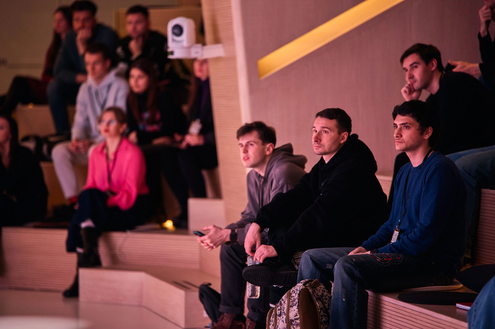
First Place in the NeuroImpact Challenge 2025
December 2025 | Ministry of Education and Science of Ukraine
Our team won first place in the NeuroImpact Challenge 2025 with our project “Design of the Phospholipid-transporting ATPase ABCA7 molecular modulator for the treatment of Alzheimer's disease.” The competition was held with the support of YURiA-PHARM LLC, Ukrainian National Office for Intellectual Property and Innovations (UANIPIO), and the Ministry of Education and Science of Ukraine.
Project contributors: Yehor Franchuk, Anatolii Zbrotskyi, Dima Aleksandrovech, and Yevhenii Zhuromskyi.
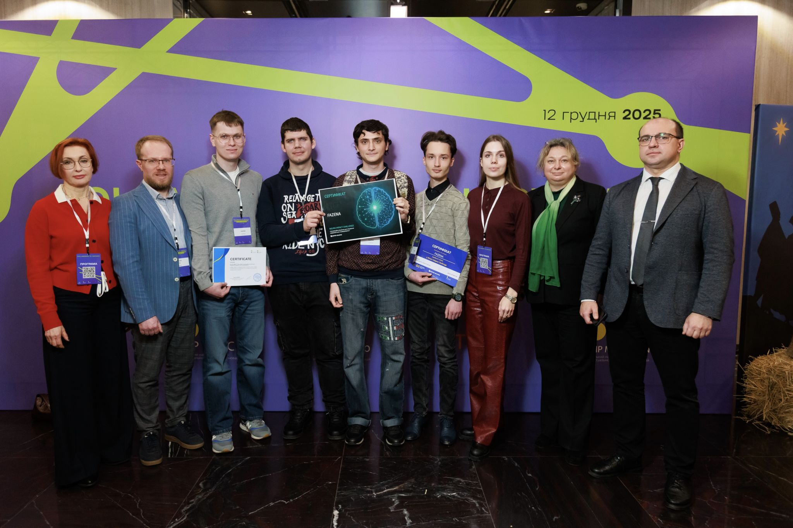
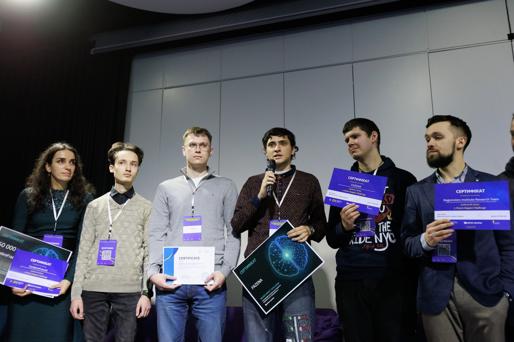
BioGENext Lecture: Prof. Janusz M. Bujnicki
November 2025 | Kyiv, Ukraine
Attended an outstanding BioGENext lecture by Prof. Janusz M. Bujnicki on computational prediction and modeling of RNA 3D structures and dynamics.
The presentation offered a comprehensive overview of the key challenges in RNA folding (non-canonical interactions, metal-ion coordination, and the impact of over 170 post-transcriptional modifications), together with the latest advances from his lab, including SimRNA and strategies for incorporating modifications and ions into 3D models.
These topics are directly relevant to my own research on 3D structure modeling of long non-coding RNAs and small-molecule drug design targeting lncRNA structures. The lecture concluded with an inspiring outlook on the Human RNome Project Consortium, a global effort to map the complete sequence, structure, dynamics, and modification landscape of the entire human transcriptome. Many thanks to Janusz Bujnicki and the BioGENext team for this inspiring event!
#BioGENext #structuralbiology #biotechnology #biotech #drug #design #discovery #development #pharmaceuticals #geneediting #rna #modeling #montecarlo #ml #ai #machinelearning #science
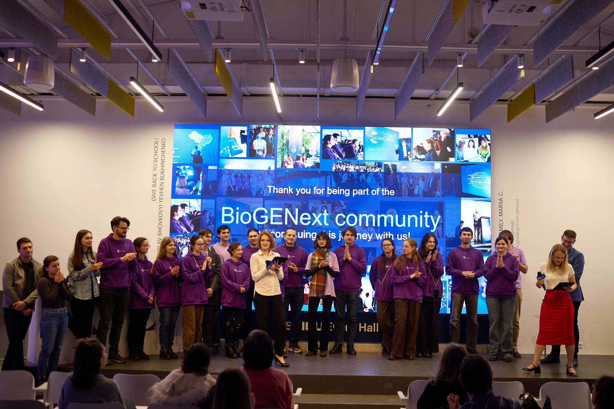
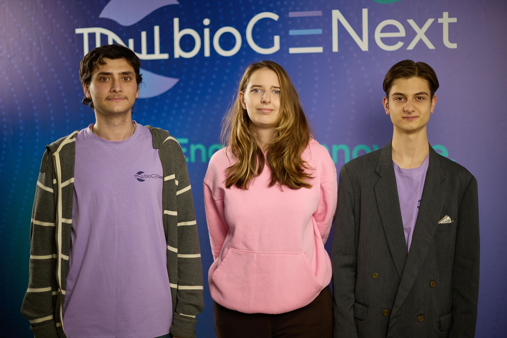
BioGENext Series 2: Fluorescence Imaging
October 2025 | Kyiv, Ukraine
I had the privilege of attending the BioGENext Series 2 as a volunteer and listener, an event hosted by the National University of Kyiv-Mohyla Academy (NaUKMA). As a dedicated volunteer from the IMBG - Department of Molecular Oncology, I continue to support this important initiative.
The highlight was Dr. Borys Olifirov's insightful presentation on Fluorescence Imaging: Theory and Applications. His shared resources and expertise deepened my understanding of fluorescence microscopy principles and their applications in modern scientific research.
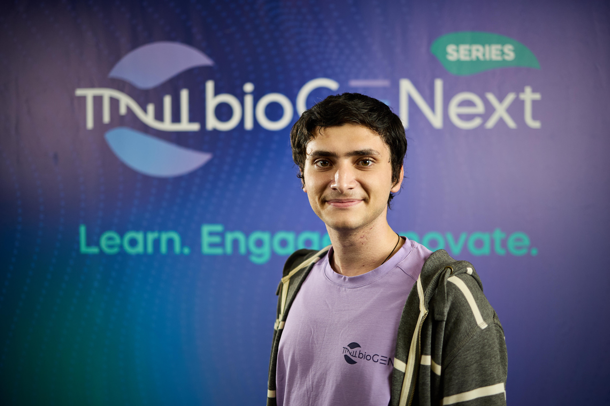
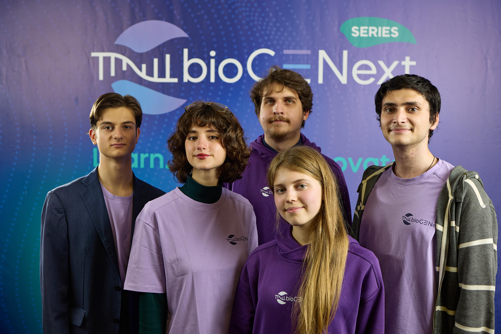
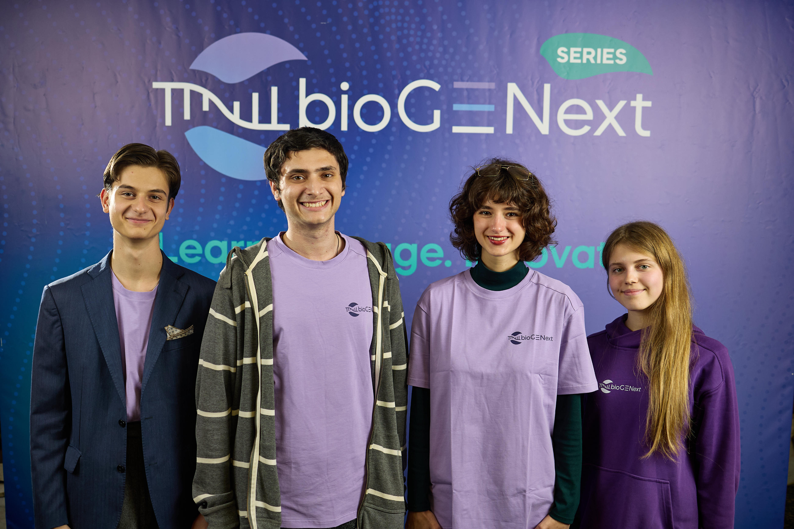
Bioinformatics School CRABS 2025
August 2025 | Kyiv School of Economics
This summer, I attended an excellent bioinformatics school CRABS 2025 in Kyiv School of Economics. I particularly enjoyed the structural biology and drug design track. Special thanks to Vladyslav Kuzniak and Diana Nechepurenko. And also to all the organizers and sponsors.
Such events are important for the development of young Ukrainian scientists, students, and enthusiasts. They also help them get to know each other and interact and cooperate in the future. Moreover, it allows them to understand what exactly they need to learn and master in order to improve their professional qualities and achieve success in their studies and/or work.
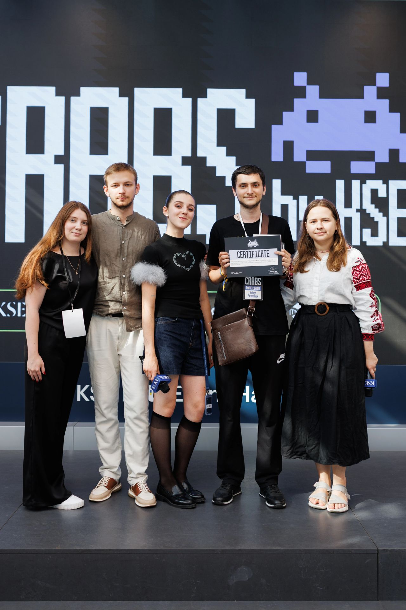
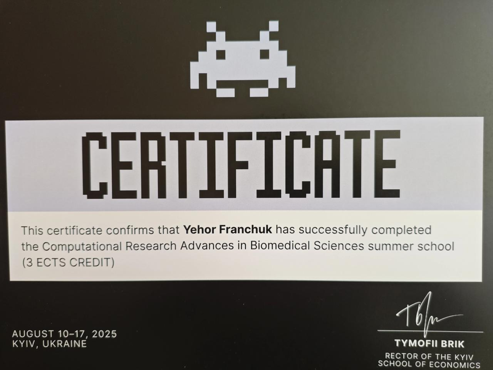
Explogen LLC & Bacterial Conjugation
August 2025 | Carpathian Mountains, Ukraine
This week I visited one of the most unique places in Ukraine. This place concentrates such interesting things for every biotechnologist, bioinformatician, geneticist, bioengineer that you cannot even still believe that you were involved in this event exactly in Explogen. We did heterologous conjugation, restriction analysis, LC-MS data analysis of secondary antibiotics, examined soil samples brought from different parts of our country, worked with Gram-positive and Gram-negative bacteria, including actinomycetes, etc.
There were a lot of lectures about bacteria and secondary metabolites of plants, which were held in the unforgettable Carpathian Mountains. I would like to point out that these events not only contribute to learning or acquiring important skills, but also to the familiarization of specialists and students from all over the country and beyond. Hopefully, this will lead to the creation of something incredibly new or useful to mankind.
I would like to thank the entire Explogen LLC team, German-Ukrainian Core of Excellence in Natural Products Research (CENtR), and for the initiative of Universität des Saarlandes, Helmholtz Institute for Pharmaceutical Research Saarland (HIPS) and the financial support of Bundesministerium für Forschung, Technologie und Raumfahrt.
#biotech #genetics #mcls
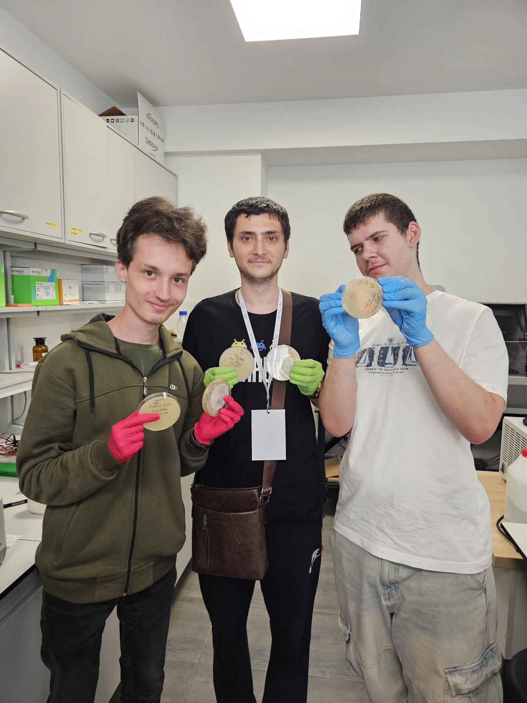
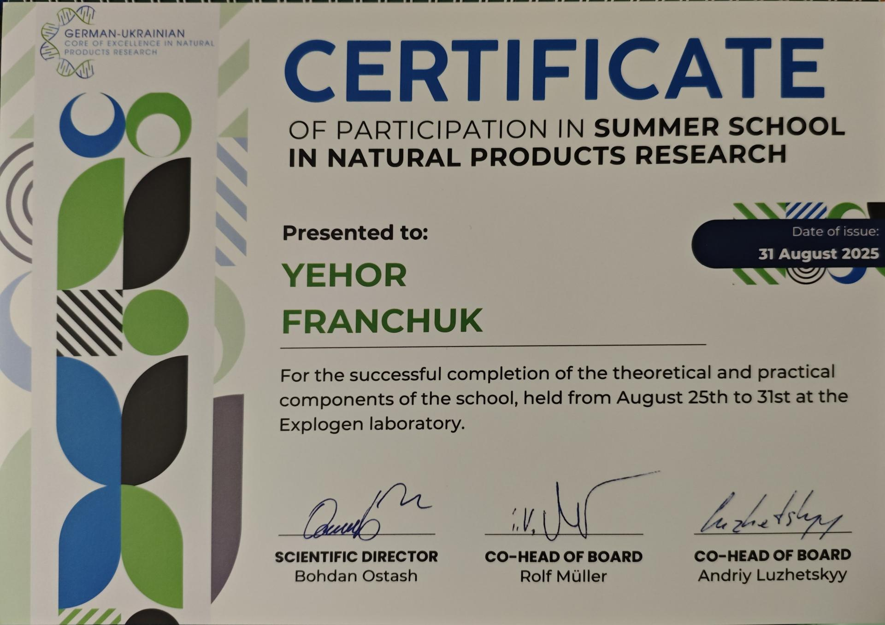
20th International Summer School "Molecular Biology, Biotechnology and Biomedicine"
June-July 2025 | Odesa I.I.Mechnikov National University
The two inspiring weeks of the 20th International Summer School "Molecular Biology, Biotechnology and Biomedicine" have come to an end! As a professional in bioinformatics and biotechnology, I found this experience truly valuable — both intellectually and professionally. The program offered in-depth insights into the latest developments in molecular biology and biomedical research, making it especially relevant and engaging for people in our fields.
The practical course was devoted to CRISPR-BASED GENE KNOCKOUT Glutamine Synthetase. During the course, besides PCR and electrophoresis, which are common for many molecular biologists, I learned in vitro transcription, in silico design of gRNAs, in vitro cleavage assay to quantify crRNA activity, got acquainted with the use of magnetic beads, use of Qubit, Bioanalyzer, electroporation for transfection of CHOK1 cells, work with electrophoregrams in Total Lab.
I would like to express my great gratitude to the teams of Odesa I.I.Mechnikov National University, YP Biotech, YURiA-PHARM LLC, who devoted great efforts and a lot of time to make this school a reality. Hopefully, there will be many more such educational initiatives. Your work has created a unique platform for learning, networking, and meaningful scientific exchange.
#Science #Education #Bioinformatics #Biotechnology #Networking #Ukraine
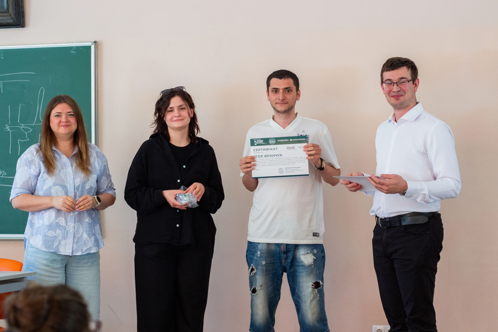
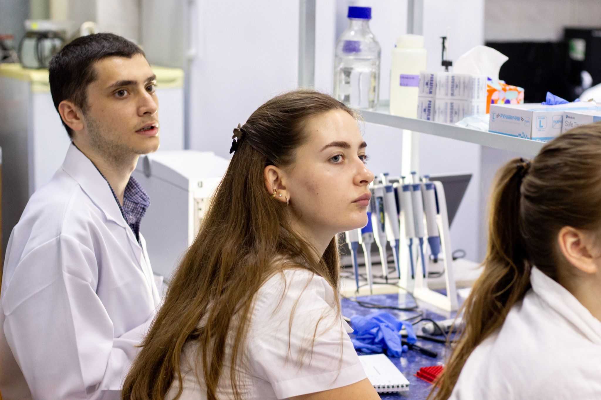
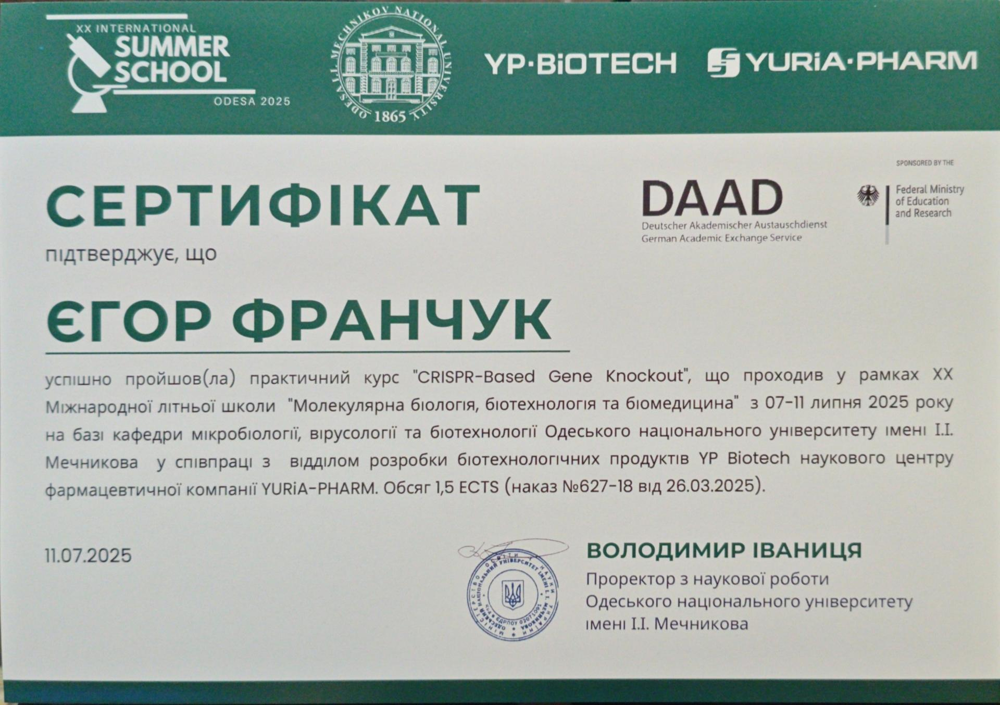
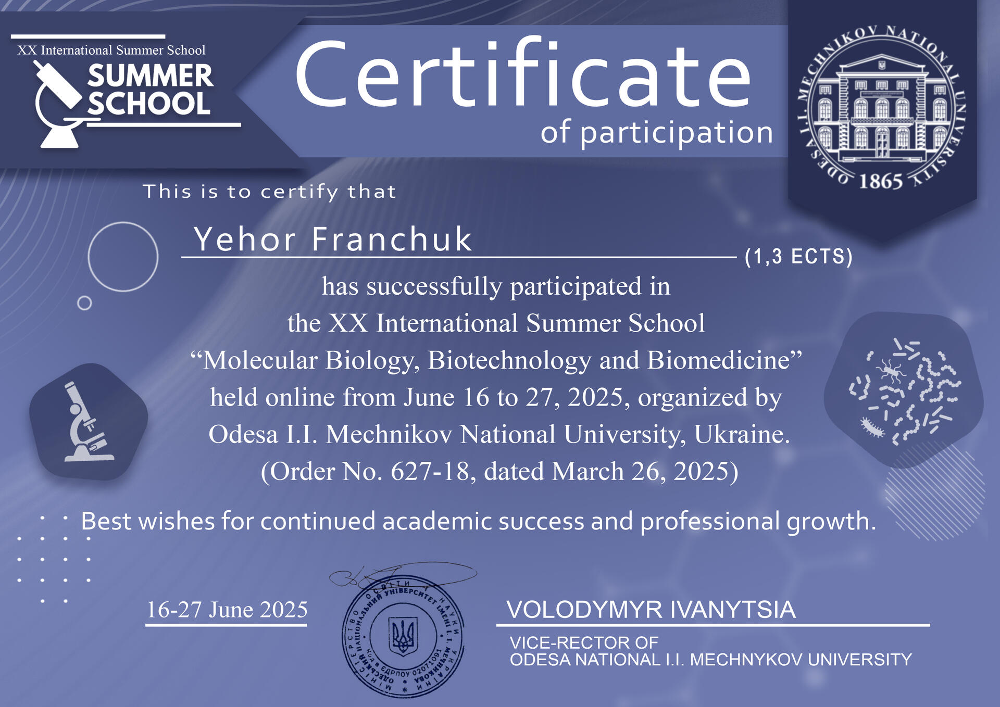
Uzhhorod Bioinformatics & Data Science Summer School (UBDS³)
June 2025 | Uzhhorod National University
Participated in the intensive two-week **Uzhhorod Bioinformatics & Data Science School (UBDS³ 2025)**. The school brought together young researchers and students from across Ukraine for intensive lectures on structural genomics, transcriptomics, and computational neuroscience, followed by hands-on research project work under international mentors from EMBL, CRG, and other global institutions.
During the school, I presented research posters relating to our ongoing computer-aided drug design and molecular dynamics pipelines:
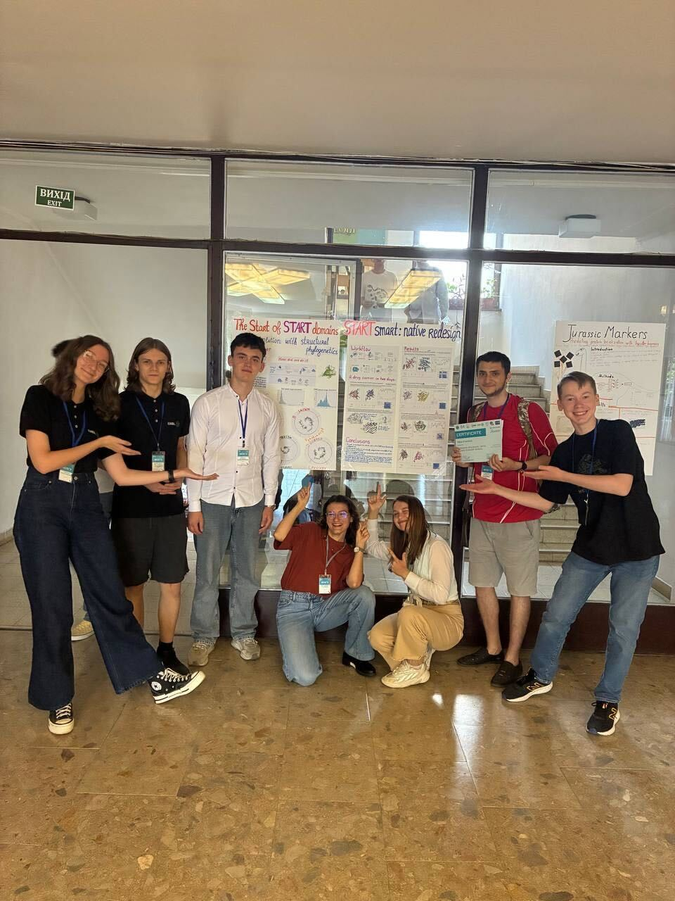
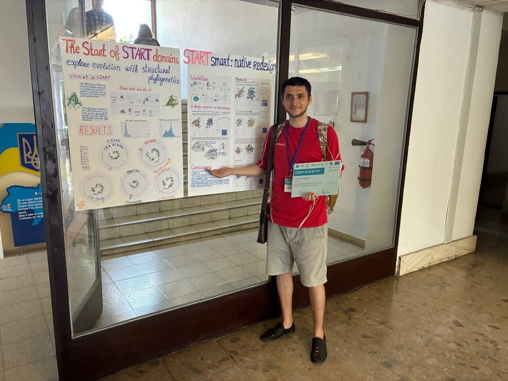
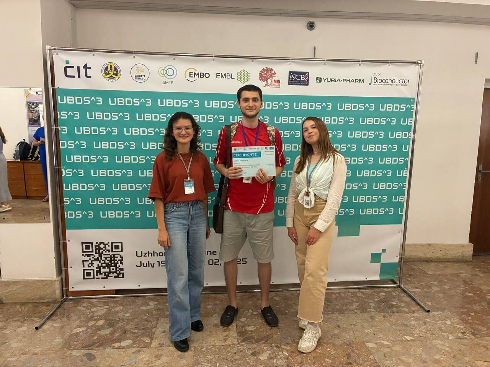
Overall, the Ukrainian Biological Data Science Summer School 2025 (UBDS³) was an interesting experience to learn what industry experts do in general. Thanks to Uzhhorod National University, EMBL, and others for organizing!
#bioinformatics #biotech #biotechnology #genomics #genetics #international #community #science #machinelearning #AI #computervision #moleculardocking #biology
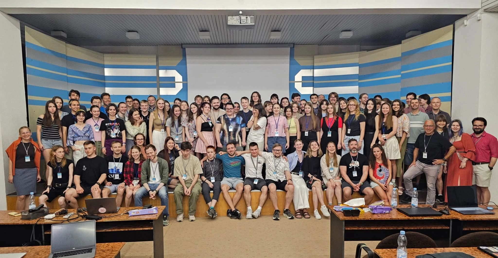
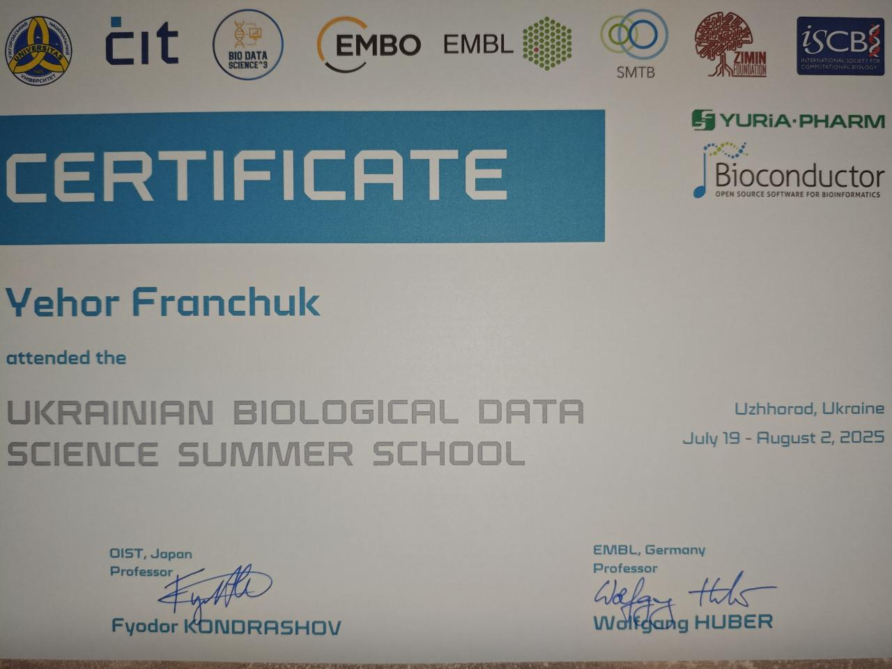
Illumina Day 2025
April 2025 | Kyiv, Ukraine
Recently, I had the privilege of attending Illumina Day 2025, an incredible event for geneticists, molecular diagnostics specialists, and bioinformaticians. It was a fantastic opportunity to explore the latest advancements in genomics, including the unveiling of the new MiSeq system, which promises to revolutionize next-generation sequencing workflows.


Lectures by BioGENex
March 2025 | Kyiv, Ukraine
I also attended a series of lectures by BioGENex, a wonderful initiative by YuriaPharm and YP Biotech. The lectures covered cutting-edge topics such as CRISPR/Cas technologies, rational drug design, proteomics, bioinformatics, wet molecular biology, recombinant technologies, and hybridoma technologies. As a bioinformatician with a biotechnological background from a technical university bachelor's program, I found this event incredibly inspiring and valuable for my professional growth.
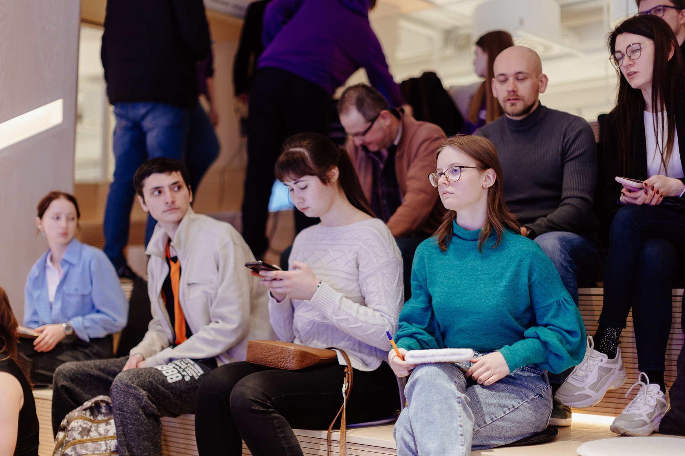
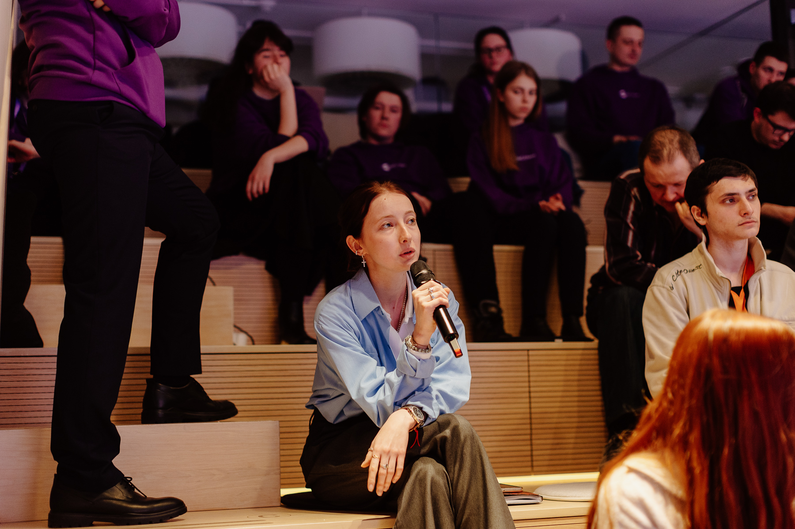
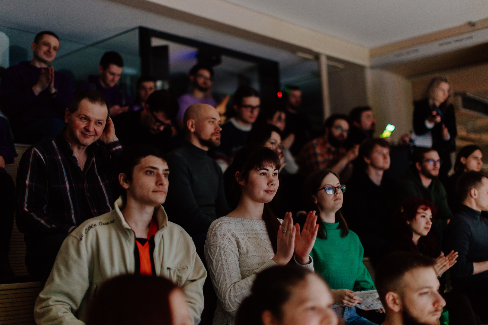
Ukrainian School in Evolutionary Biology (USEB2025)
February 2025 | V.N. Karazin Kharkiv National University & Uzhhorod National University
Thrilled to Have Participated in USEB2025! 🌱🔬 I’m so excited to share my fantastic experience at the Ukrainian School in Evolutionary Biology (USEB2025), organized by the amazing teams from V.N. Karazin Kharkiv National University and Uzhhorod National University! 🎓✨ While the physical event took place in Uzhhorod, I joined online from Kyiv, and it was an absolute blast! 🚀
Even though the event was fully virtual, I was able to turn this experience into meaningful connections! Inspired by the impressive lineup of speakers and participants, I took the initiative to reach out on LinkedIn and connected with several fascinating individuals involved in the project. These connections have already sparked interesting discussions and opened up potential opportunities for future collaborations! 💡🤝
The interactive workshops were a standout part of the program—packed with hands-on examples and cutting-edge tools for phylogenetic analysis, molecular evolution studies, and more. It’s exactly what young researchers like myself need to take our skills to the next level! 💻🧬
A huge thank you to the incredible partners who supported this initiative: ESEB, BioIN, Oakland University Genomics, CBGP, NIOZ, and INRAE. Their backing made this program even more accessible and globally connected, allowing us to engage with top-tier experts in the field. 🌍✨ Being based in Kyiv during the event, I couldn’t help but hope for more such initiatives right here in the capital—or perhaps back in my hometown of Kharkiv! Bringing these opportunities closer would be a fantastic way to nurture Ukraine’s growing scientific community. 🇺🇦✨
#EvolutionaryBiology #Phylogenetics #Bioinformatics #USEB2025 #ScienceInUkraine #AcademicGrowth #ResearchCommunity #Networking
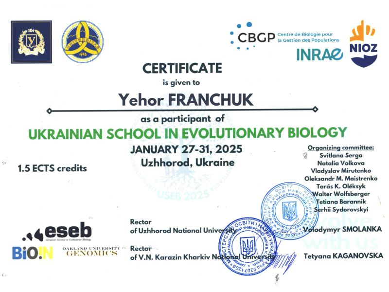
Genome Editing using CRISPR/Cas System
December 2024 | YP Biotech
I recently completed a course on genome editing using the CRISPR/Cas system. Now it is a unique opportunity to deepen our knowledge 👨🎓 and learn from YP Biotech's experience, to practice in silico plasmid design methods 👨💻 in SnapGene. I would like to thank Odesa I.I.Mechnikov National University, YP Biotech, and DAAD Deutscher Akademischer Austauschdienst for the opportunity to develop in the field of genetic engineering 🧬 🔬 🧫.
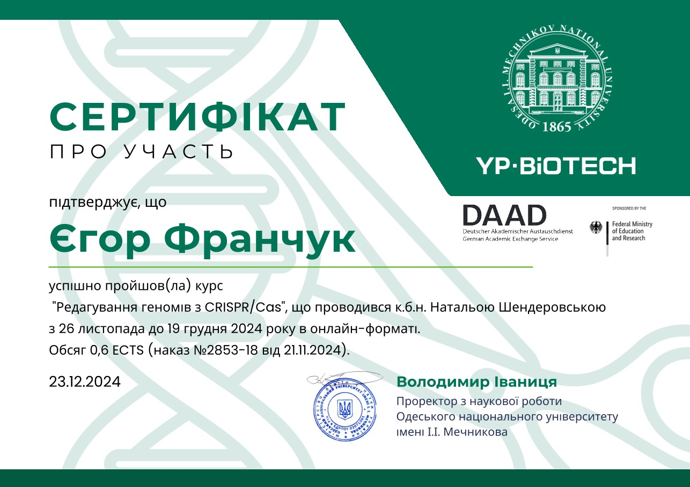